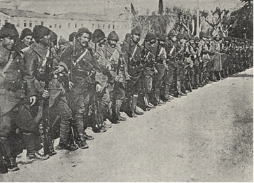

1 Ağustos 1914’de Osmanlı İmparatorluğu ile Merkezî Devletler arasındaki ittifak andlaşması Sadrazam Sait Halim Paşa’nın konağında akşam geç vakit imza edildi.
Daha 1914 senesi başında Türkiye Hükümeti, Almanya’ya bir ittifak teklifinde bulunmuştu. Fakat o vakit gerek İstanbul’daki Alman Sefareti, gerekse Berlin’deki Hariciye Nezareti bir ihtilâl ve üç talihsiz harp neticesinde zayıf düşmüş olan genç Türk Hükümeti’nin ittifak kudretinin yetersizliğini göz önüne alarak Türkiye ile bir ittifak akdinin reddedilmesi görüşünü gütmüşlerdi. Fakat İmparatorun ileri görüşlülüğü sayesinde bu husustaki bütün bağlar koparılmamış ve uzatılan müzakerelerle harp başlar başlamaz ittifakın akdi yine mümkün olabilmişti.
Türkiye o zaman harp yorgunu idi. Ne ordu, ne de memleket harbe hazırdı. Orduda ve millette Balkan Harbi’nin ağır hezimetlerinin hatıraları henüz pek canlı idi. Kamuoyu hiçbir şekilde Merkezî Devletlerle bir ittifak akdine hazırlanmamıştı. Muktedir subaylar, talim ve terbiye görmüş erler, her türlü harp malzemesindeki kayıplar henüz ikmal edilmemişti. Osmanlı Hükümeti’nin maliyesi ve malzeme kaynakları tükenmişti. Genç Türk rejimi memleket içinde henüz kuvvet bulmamıştı.
Genç Türkleri iş başına getiren 1908 ihtilâlinde, kendi talihlerini Allah’ın iradesine büyük bir itaatle teslim etmiş olan halk kütlelerinin yükselmesi değil, aksine Sultan Abdülhamid’in zalim ve gerilemeye yüz tutmuş idaresine karşı genç Osmanlı aydınlarının bir kısmının isyanı ve baskı altında bulunan milletin aydın tabakasının en ileri gelen temsilcilerinin başkaldırması etkili olmuştu.
İhtilâl neticesinde millete vaad edilen gençleşme davasını gerçekleştirmek gibi ağır mesuliyetli vazifeler karşısında bulunan daha nisbeten pek genç sayılan kimseler, mukaddes bir gayret ateşiyle yanmaktaydılar ve heyecanlar içerisinde kendilerine güvenen bir hisle ideallerinin peşinden koştular. Fakat maalesef birçok hallerde olduğu gibi ne iktidar, ne bilgi ve ne de tecrübeleri bu gayretle orantılı değildi. Fazla gayretkeşlikle birdenbire pek çok işler yapmaya kalktılar. Bunlar kendi kuvvetlerine fazla güvenerek ve ruhî azametten de daima soyutlanmadan General Feldmareşal Baron von der Goltz’un çok değerli eserinde (Genç Türkiye’nin Hezimeti, Berlin 1913) pek yerinde ifade edildiği şekilde; “Sert ve şiddetli bir istibdatla idare edilen bir memleketten çarçabuk meşrutî bir Türk hükümeti yapmak istiyorlardı”.
Bundan dolayıdır ki, daha Balkan Harbi’nin başlamasından önce kamuoyunda ve bilhassa orduda, milletin yeni ve siyasî, askerî önderlerine karşı geniş ölçüde bir güvensizlik baş göstermişti. Cebren yapılan her inkılâpta olduğu gibi, Genç Türk ihtilâlinden sonra da, doğru hüküm vermekten âciz olan kütlede iş başına gelenlerin bütün vaadlerini hemen yerine getiremeyeceklerine, işlerin yeni düzeni hakkındaki mübalağalı ümitlerinin aldatıcı olduklarına dair kuvvetli bir güvensizlik hissi ortaya çıkmıştı. İktidardaki İttihat ve Terakki Komitesi’nin seçmenlerine karşı yaptığı pervasız tahakküm, yeni seçim hakkının oluşturduğu sevinci önemli ölçüde azaltmıştı. Sarayın kayırma siyaseti sadece İttihat ve Terakki’ye geçmiş ve yaptığı fenalıklar da eskisinden daha az olmamıştı. Parti delegeleri bir Abdülhamid devrinin hafiyeleri gibi aynı baskı ve şiddeti icra ediyorlardı. Sürekli olarak kabine değişmesi, yeni hükümet sisteminin maksada uygun olmasında ciddî şüpheler uyandırıyordu. Memleket halkı, köylü yeni düzenin kendisine getirdiği iyiliklerden henüz bir şey anlayamamışlardı; çünkü ezici, bunaltıcı vergi yükünü Genç Türkler de azaltmaya muvaffak olamıyordu.
Hulâsa siyasi sistemin değişmesiyle, bu değişiklikle birlikte ortaya çıkması zarurî olan olumsuzlukların hepsi meydana çıkmıştı. Bütün bu haller Genç Türk rejiminin kuvvetlenmesini geciktiriyor ve her ne kadar açıkça başkaldırması mümkün olmayan, fakat kamuoyu ve memleketteki ruh hâli üzerinde küçümsenmeyecek derecede bir etki yapan muhalefeti de kuvvetlendiriyordu.
Yeni Türkiye’yi idare edenlerin vazifeleri, eski Osmanlı Devleti’nin bir ulus devlet olmayıp aksine hedef ve menfaatleri birbirinden ayrı milletlerden oluşan bir hükümet olması dolayısıyla son derece güçleşiyordu. Bu farklı ırklardan, dinlerden ve kültürlerden oluşan karma devlet, tek ve birleşik bir millî ülkü ile değil, yalnız baskı, şiddet ve farklı ırk ve zümrenin adetlerine göre alınan tedbirlerle idare edilebiliyordu.
Memlekette çok mühim bir ekseriyeti temsil eden Rum unsurlar, Bizans İmparatorluğu’nun yeniden kurulması hulyası peşinde idiler. Ermeniler de Türk esaretinden kurtulmak için mücadele ediyor ve Türkler aleyhinde hemen bütün dünyada pek faal bir propaganda yapıyorlardı. Arap vilâyetlerinde –Fransa ve İngiltere’nin yardımıyla- Türkiye’den ayrılmak için kuvvetli bir hareket baş göstermişti. Kürtlere gelince, bunlar sürekli isyan eden ve kendilerine güvenilmeyecek olan bir cemaat idiler.
Bu şartlar altında Osmanlı Hükümeti’nin, başlamakta olan Dünya Savaşı’nda takip edeceği siyaset hakkındaki fikirlerin birbirinden pek ziyade aykırı olacağına hayret etmemek gerekir. Bu ortamda harp siyasetini ilgilendiren işlerde sempatilerin, antipatilerin, ticarî menfaatlerin mühim bir rol oynadıklarına şüphe edilmez.
Türk halkının büyük çoğunluğu barış taraftarı ve Türkiye’nin tarafsız bir memleket olarak bütün harp kargaşalıklarından uzak kalacağını ümit ediyordu. Küçük bir azınlık da İtilâf Devletleriyle ittifakı arzu ediyordu; yalnız sayısı pek az olan askerlerle siyaset adamları Türkiye’nin Merkezî Devletlere katılması fikrini destekliyorlardı. Türkiye’nin derhal harbe girmesini isteyen ve bunu mümkün görenlerin sayısı çok azdı.
Bütün muhalif akımlara karşı koyarak Türkiye’nin Merkezî Devletlere katılmasını sağlayan iki kişinin, Harbiye Nazırı Enver Paşa ile Dâhiliye Nazırı iken sonradan Sadrazam olan Talat Paşa’nın bu işteki hizmetleri cidden büyük takdire lâyıktır. Bunlar daha o vakit, İtilaf Devletlerinin zaferiyle bitecek bir harpten sonra Türkiye’nin aralarında paylaşılacağına ve bu tehdit eden ölümden kurtulabilmek için yegâne çarenin Merkezî Devletler’e katılmak olduğunu büyük bir açıklıkla takdir eden pek az Türk politikacılarından idiler. Bu iki zatın takip ettiği siyaset, Türkiye’yi başta ağır hezimetlere sürüklemiş olsa da, Atatürk tarafından bugünkü Türkiye’nin kurulmasında bu hezimetlerin yadsınamaz birer etken olduğuna kanaatimce şüphe yoktur.
Türkiye’nin derhal savaşa girmesi hususundaki Alman Başkomutanlığı’nın ısrarına rağmen Türk Hükümeti, –bilhassa Bahriye Nazırı Cemal Paşa’nın tesiri altında– önce tarafsız kalmaya ve seferberliğini tamamladıktan sonra harekete geçmeye karar verdi. Geçmişe bakılacak olursa bugün, Türk seferberliğinin yavaş ilerlemesi ve askerî harekâtla ilgili nakliyatın pek uzun sürmesi açısından bu kararın tamamen doğru olduğuna işaret etmek lâzımdır.
Avrupa kıtasındaki askerî hükümetlerde alışık olunduğu üzere bir plan dairesinde seferberliğin hazırlanmasını o vakitki Türkiye bilmiyordu. Hemen her şey bir hazırlık yapılmaksızın icra edilmekteydi. Ancak harbin başlamasından bir-iki hafta sonra Türk Harbiye Nezareti’nde idarem altında bir seferberlik şubesi kurulmuştu ve biz de seferberlik emri verildiği zaman işe, Alman seferberlik nizamnamelerinin Türkiye’deki hal ve şartlara göre değiştirilmesiyle başlamıştık. Harekât ve seferberlik nakliyatı, Türk demiryolları ağının gelişmesindeki yetersizlikten ve bu yolların askerî nakliyat işlerindeki kudret ve kabiliyetlerinin azlığından ve geçilmesi gereken mesafelerin uzunluğundan dolayı fevkalade uzun bir zamana ihtiyaç gösteriyordu. Seferberliğin tamamlanmasından ve Türk ordularının yığınağından önce İtilâf kuvvetleri tarafından Çanakkale ve İstanbul’a karşı yapılacak toplu bir taarruz yalnız Türkiye için bir felâket olmakla kalmaz, aksine müttefikleri için de kötü sonuçlar doğurabilirdi.
Türk devlet adamlarının, Türkiye’nin harbe dâhil olduğu 3 Kasım 1914 tarihine kadar memleketlerinin tarafsızlığını korumaya ve bu süre içinde İstanbul’daki İtilâf Devletleri temsilcilerini kendi hakiki maksatları hakkında aldatmaya muvaffak olmaları Şark diplomasisinin bir şaheseridir.
Merkezî Devletlerin harp esnasında müttefikleri Türkiye için katlandıkları büyük malzeme ve insan fedakârlıklarına rağmen Türkiye ittifakının kendilerine pek büyük fayda temin etmiş olduğu bugün artık şüphe götürmeyen bir gerçektir.
Alman Islah Heyeti Başkanı Prusya Krallığı Orgenerali ve Türk Mareşali Liman von Sanders’in enerjik ve dâhiyane sevk ve idaresi altında Çanakkale’nin muzafferane müdafaası ve Boğazlar’ın daimi surette kapatılması neticesinde Türkiye’nin Merkezî Devletlere yaptığı yardımın harbin cereyanı üzerinde oluşturduğu önem, Mareşal Liman von Sanders’in büyük başarısı gibi bugün de Almanya’da lâyık olduğu takdirle karşılanmamaktadır.
Türkiye dört uzun harp senesi devamınca sürekli kuvvetli düşman ordularını bağlamıştır (Kafkasya’da 300.000 Rus, Filistin’de 450.000’e yakın ve Irak’ta bazen adedi yarım milyona ulaşan İngiliz askeri). Avrupa harp sahnelerinde Türk tümenleri Alman ve Avusturyalı müttefikleriyle omuz omuza kahramanca dövüşmüşlerdir. Dünya Savaşı boyunca Türkiye, evlâtlarından 2.800.000 kişiyi silâhaltına almış ve bunlardan en az yarım milyonu şehit düşmüş veya hastalık veyahut da aldıklar yaralardan ölmüştür. Acı sona kadar Türk müttefikimiz bize, pek çok kurban vermek ve ağır ıstıraplar çekmek şartıyla sadık kalmıştır.
Merkezî Devletler için Türkiye ile olan ittifakın büyük ehemmiyeti, harbin başında İstanbul’da akıllı, tecrübeli ve kibar bir diplomat olan Alman Sefiri Baron von Wan-genheim tarafından lâyıkıyla takdir edilmişti. Biz, Alman Islah Heyeti üyeleri istisnasız olarak şahsî tecrübelerimize, Türk ordusunun zaaflarını tamamen bilmemize ve ordu ile milletin harp yorgunu olmasına dayanarak, Türkiye’nin ittifak kudret ve kabiliyetini sefirden çok aşağı takdir etmiştik. Bizim hükümlerimize fazlasıyla etki eden günlük hayatın can sıkıcı hallerinden daha uzak bulunması, büyük elçiye hükmünde faydalı olmuştu.
Türk arkadaşlarıyla sürekli temasta bulunan Alman subaylarının, bu arkadaşların siyasî düşünceleri, Türk nazırlarıyla politikacılarının İtilaf Devletleri sefaretleri ile hâlâ devam etmekte olan sıkı münasebetleri ve millet ile ordudaki ruh hâli hakkında duydukları şeyler bizde, Türkiye’nin ittifak anlaşmasıyla üstlendiği görevleri yerine getirebileceğine ve yerine getirmek isteyeceğine dair kuvvetli bir şüphe uyandırmıştı. Türk kabine azaları arasındaki kuvvetli fikir aykırılığı bizce biliniyordu. Bir gün ben şahsen, hasta olan genelkurmay başkanının vekili olarak işler hakkında her gün verilmesi alışılagelmiş olan raporu Başkomutan Vekili Enver Paşa’ya arz ederken, kendisi bana bakanlar kurulunda yalnız başına kaldığını söylemişti. O, Alman Başkomutanlığı’nın arzusu üzere, Türkiye’nin derhal savaşa girmesine taraftardı. Dâhiliye Nazırı Talat Paşa da Türkiye’nin Merkezî Devletler yanında harbe girmesini gerekli görüyorsa da işe ancak Bulgarların Merkezî Devletlere katılmasından sonra başlanmasını istiyordu. Talat’ın fikrine göre, Bulgaristan, Sırbistan ve Yunanistan tarafından bağlanmadığı müddetçe Rusya’nın vaadlerine kanarak Türkiye’yi arkadan vurması ihtimali hesaba katılmalıydı. Bahriye Nazırı Cemal Paşa ise harbe fiilen müdahalenin, Rusya için verilecek son karardan sonra olmasını istiyordu. Maliye Nazırı Cavid’e gelince, o Avrupa büyük devletleriyle harbe girmeyi doğrudan doğruya reddediyordu. Cavid ancak Yunanistan’a karşı bir harp için kazanılabilecekti.
Yetkili Türk politikacılarının bu fikirlerde olmasından dolayı Enver’in kabineden –hiçbir vakit ihtimal dışı olmayan– çekilmesi neticesinde Türkiye’nin, Merkezî Devletlerle ittifakını feshedebileceği, biz Alman subayları üzerinde endişe oluşturuyordu. Belki de doğru hüküm vermemiz mümkün olamıyordu; çünkü Türk hizmetinden ayrılıp Alman ordusunda kardeşlerimizin yanında vatanımız için çarpışmak hususunda duyduğumuz çok ateşli bir arzunun tesiri altında kalmıştık. Türkiye ile olan hizmet sözleşmemizin bu husustaki bir hükmüne dayanarak Alman Islah Heyeti başkanı, hepimizin namına İmparatora Türkiye’den geri çağrılmamız için bir dilekçe takdim etmişti. Bu ricanın kesin bir dille reddedilmesi İmparatorun bize, siyasete önem vermeksizin kendisinin tayin ettiği vazifede kalmaya tahammül etmemiz hakkındaki açık emri, hepimizde derin bir ümitsizlik oluşturmuştu. Kardeş ve arkadaşlarımızın zaferden zafere koşarak vatan yolunda kan ve can verdikleri bu sırada Türkiye’de barışta olduğu gibi yaşamak ve çalışmakta devam etmek biz muvazzaf askerler için utanç verici bir hâldi.
2 Ağustos 1914’te Türk Hükümeti, bütün Türk ordusunun seferberlik emrini verdi. İtilaf Devletleri temsilcilerine de, Türkiye’nin gerçekte tarafsızlığını koruyacağını fakat Rusya’nın açık olmayan siyaseti karşısında Türk ordusunu seferî duruma koymak mecburiyetinde olduğunu bildirdi.
Seferberlik emrinin ilanı ne halkta ve ne de basında hiçbir coşkunluğa sebep olmadı. Yalnız birkaç gün sonra Armstrong tezgâhlarında inşası bitmek üzere olan “Sultan Osman” adlı harp gemisine ve yine İngiltere’de inşa edilmekte olan diğer ikinci bir Türk zırhlısına[1] İngilizler tarafından el konulması basında ve İstanbul sokaklarında bir nevi harp havası ve kin galeyanı yaratmıştı. Türkiye’ye karşı yapılan bu gasptan ileri gelen kin ve hiddet, Sultan Osman savaş gemisinin, bedeli milletten toplanan yardımlarla inşa ettirilmiş olmasından dolayı özellikle şiddetli idi ve bu zırhlıların inşasında en fakir Türk’ün bile bir hissesi, bir akçesi vardı. Ben çok kuvvetli İngiliz donanmasının bu iki gemi ile elde ettiği kuvvet artışının, İngilizlerin İslâm âleminde kaybettikleri saygınlığı telâfi etmiş olacağından şüphe etmekteyim. İngilizlerin bu kararı, Türklerin seferberliğinin ilânından önce ve gemilerin son taksitinin ödenmesinden yarım saat sonra vuku bulmuş olması dolayısıyla da dikkate değerdir.
Türk kamuoyunun lehimize dönmesinde diğer bir etken de 10 Ağustos 1914 tarihinde Goeben ve Breslau adlı Alman harp gemilerinin Akdeniz’de cesurane ve şanlı bir seyirden sonra İstanbul’a gelmiş olmalarıdır.
Devletlerarası deniz hukuna göre tarafsız olan Türklerin, Alman filosu komutanı Amiral Souchon’u 24 saat zarfında Türk sularını terk etmeye davet etmesi -ki bu da gemilerin yok edilmesi demek olurdu- veyahut gemilerin silâhları alınarak tecrit edilmesi gerekirdi. Berlin ile mutabık kalarak Türk Hükümeti, İtilâf Devletleri elçiliklerine, bu gemilerin harbin başlamasından önce Almanya tarafından Türkiye’ye satılmış olduğunu bildirdi. Goeben ile Breslau’a Yavuz ve Midilli adları konarak Alman komutan ve mürettebatı ile beraber Türk filosuna katıldı.
10 Ağustos 1914 sabahı Boğaz’ı savunan Çanakkale Müstahkem Mevkii’nden, Türk Başkomutanlık Vekâleti’ne bir telgraf gelmişti. Bu telgrafta; Boğaz’ın dışında bulunan Goeben ve Breslau Alman harp gemilerinin içeriye girmek için müsaade rica ettikleri bildiriliyordu. Ben telgrafı alarak hemen Enver’in odasına koştum ve kendisinden bu müsaadeyi vermesi için ricada bulundum. Enver’in; “böyle mühim bir kararın Sadrazam’la[2] görüşmeden evvel kendisi tarafından verilemeyeceği” hakkındaki itirazına karşı, bu işte yapılacak kısa bir gecikmenin telâfi edilemeyecek sonuçlar doğurabileceğine dair Enver’in dikkatini çektim ve İngilizlerin her halde pek yakından gemilerin peşinde olduklarının kabul edilmesi lâzım geldiğini anlattım.
“Gemiler içeriye alınsın!” cümlesiyle Enver kararını vermişti.
Bunun üzerine; “İngilizler, Alman gemilerini takip ederek Çanakkale’yi zorlayacak olurlarsa bunların üzerine ateş edilsin mi?” sualini sordum. Enver: “Bu benim yalnız başıma karar vermeme imkân olmayan bir meseledir, bunu ancak bakanlar kurulu halledebilir; çünkü bu hâl, İtilaf Devletlerinin derhal savaş açması sonucunu doğurabilir” dedi. Ben, en yüksek mevkideki amirlerinin tam lâzım olduğu bir zamanda Çanakkale Müstahkem Mevkii komutanlarını açık ve kesin emir ve talimat vermeksizin kendi başlarına bırakmasının onları ne kadar zor bir duruma sokacağını ve bu gibi ağır mesuliyetlerin alt rütbedekilere yükletilmemesi gerektiğini büyük bir açıklıkla Enver’e izah etmiştim. Enver fikrimi tasdik etti ve benim yeniden; “Ateş edilsin mi, edilmesin mi?” sualime “Evet!” cevabını verdi[3]. Kalbim dehşetli ferahlanmıştı. Enver’in cesaretine, karar verme kudretine ve mesuliyeti sevmesine tam bir hayranlıkla, onun çalışma odasını terk etmiştim.
Kendisine başkomutan vekili olarak Osmanlı Devleti’nin bütün harp kuvvetlerinin sınırsız emir ve komutası verildiği zaman, Tuğgeneral Enver 33 yaşında bulunuyordu. O, basit bir aileden yetişmişti. Pek genç subay olarak Makedonya’daki çete harplerine katılmış, genç yaşlarında Selanik’te daha o vakit gizli bir ihtilâl komitesi olan İttihat ve Terakki’nin gayretli bir üyesi olmuştu. Radikalizmi, mahareti ve ataklığı dolayısıyla pek az sonra onun partide bir başrol oynadığı anlaşılmaktadır. 1909 irtica vakasının[4] bastırılmasından sonra, iyi Almanca konuşan Enver, Berlin Türk Sefareti’ne ataşemiliter olarak tayin edilmişti. Berlin meclislerinde çok fazla şımartılan Enver’i ben o vakit zarif, kıyafeti iyi, mütevazı ve pek mahçup bir subay olarak tanımıştım.
1911’de çıkan İtalya Harbi, Enver’i vatanına çağırmıştı. Türk Hükümeti, Trablusgarp sahillerinin kaybından sonra İtalyanların içerilere nüfuz etmelerine küçük muharebelerle mani olmak istiyordu. Kendisinin emri altına verilen birkaç Türk subayıyla Enver, bu muharebeleri tanzim ve idare edecekti. Onun bu vazifede emir ve komutayı elinde bulundurduğu müddetçe İtalyanların içeriye doğru hiçbir ilerleme sağlayamamaları kendisinin lehine ve muhaliflerinin aleyhineydi. Birinci Balkan Harbi’nin çıkması üzerine Enver İstanbul’a gelmiş ve kurmay başkanı olarak önce bir kolorduda ve sonra bir orduda istihdam edilmişti. Bu vazifeleri yerine getirmek için gerekli olan tahsili hiçbir şekilde almamış olan Enver’in bu vazifelerde öne çıkmadığı anlaşılmaktadır. Ciddî olarak kabul edilen Türk eleştirmenleri, onu, parti politikasına olan bağlarından dolayı serbest kalamadığından, askerî faaliyetlerinin eksik kalmış olmasıyla itham etmektedirler. O, parti politikacısı sıfatıyla, askerî disiplinle hiçbir vakit uyuşmayacak olan entrikalara karışmış olmak töhmeti altında idi.
İkinci Balkan Harbi’nde Edirne üzerine yürüyüşte Enver, ordunun önünden bir süvari tugayı ile ileriye atılabilmek için müsaade istemiş ve Edirne istihkâmlarına ilk girenlerden biri olmuştu. Bunun için kendisine “Edirne Fatihi” unvanı verilmiştir ki, bu şöhreti o, içki, kumar ve kadın meselelerine hiçbir şekilde kapılmamasına, para işlerindeki ilgisizliğine, vazifedeki sadakatine ve şahsî cesaretiyle beraber; birinci derecede halk ve ordunun kendisine karşı beslediği sevgi ve gösterdiği itibara borçludur.
Maalesef Enver, halkın kendisine olan bu teveccühünü Dünya Savaşı’nın devamı esnasında kısmen talihsiz bir asker olması ve bilhassa karısının fazlasıyla tesiri altında kalarak; büyük itibar ve şöhretini borçlu olduğu bu meziyetlerinden gittikçe daha fazla soyunmuş olmasıyla kaybetmişti.
Parti arkadaşlarının teşvikiyle Enver, 1914 senesinde Osmanlı Hanedanı’ndan bir sultanla evlendi. Parti arkadaşları bu evlilikle, eski rejimle yeni rejimi birbirlerine yaklaştırmayı hedefliyorlardı. Bu mantık evliliğinden, bir aşk evliliği doğdu. Enver genç karısı için zamanının mühim bir kısmını feda ediyordu ve sultanın delice arzularının ve israf hastalığının önüne geçemiyordu. Evinin (sarayının) idaresi ve yaşama tarzı kendi gelirinden çok daha yüksek paralara ihtiyaç gösteriyordu. Dostları, onu bu lüks yaşama tarzının telafi edilemez kötü sonuçları hakkında ikaz ettikleri vakit o da cevaben: “Siz beni Osmanlı Hanedanı’ndan bir sultanla evlendirdiniz, ben onu bir teğmen karısı gibi ortaya çıkaramam” diyordu.
Çok değişken meslek hayatı genç Enver’e, kıta hizmetinin uygulamalı tecrübelerini edinmeye ve yüksek komutanlıkları işgal ve birliklerini sevk ve idare edebilmek için biz Almanların olmazsa olmaz kabul ettiğimiz esaslı bilgilere sahip olmasına zaman bırakmıyordu. Onun yüksek kabiliyeti, irade kuvveti, çabuk kavrama ve karar verme yeteneği, askerî eğitim ve bilgi noksanlarını bir derece telâfi edebiliyordu. Fakat meslekten olmayan kimselere özgü olarak çok kere, bir meselenin zorluklarını takdir etmez, ayrıntıların ve zamanlamanın değerini küçümserdi. Onda, herhalde tatbikî görev eksikliğinden ileri gelen, çok fazla göze çarpan bir hâl vardı ki, bu da çoğunlukla dürüst davranan Enver’in çok kere, bir Osmanlı ordusunun başkomutan vekilini o kadar ağır sorumluluk isteyen görevlerden uzaklaştıracak, önemsiz ve sıradan işlerle uğraşması idi.
Felakete sebep olan diğer bir mesele de, Enver’in, Türkiye kuvvetlerinin tükendiği zamanı vaktinde anlayamaması veyahut anlamak istememesi ve böylece savaşın gidişatına dair alacağı tedbirlerde elinde mevcut imkânların ölçüsünü ve kıymetini yeterince hesaba katamaması idi. Haklı olarak dostu Cemal Paşa, bir fırsatta benimle Enver hakkında görüşürken, onun hiçbir vakit kıta hizmeti yapmamış olmasından dolayı kullanmaya mecbur olduğu silah yani askerlik hakkında yeterli derecede bilgi sahibi olmayışını Türkiye için büyük bir felâket olarak vasıflandırmıştı.
Biz Almanların Enver’e, Merkezî Devletler’le olan ittifaka bağlılığındaki sarsılmaz sadakati, bu işte maruz kaldığı bütün muhalefetlere büyük bir enerji ile karşı gelmiş olması dolayısıyla büyük şükran borcumuz vardır. Enver, herkesten önce Merkezî Devletler’in savaş harekâtının idaresi için birleşik bir başkomutanlık kurulması gerektiğini çok açık olarak takdir etmiş ve kendi arzusuyla Alman komutasının emri altına girmişti. O, Dünya Savaşı sonucunun, Türk cephelerinde değil, Fransa savaş meydanlarında kazanılacağını takdir ettiğinden, Alman Başkomutanlığı’nın arzularını öyle geniş ölçekte yerine getiriyordu ki, bazen Türk cephelerinin menfaat ve ihtiyaçlarını yeterli derecede hesaba katmıyor ve bundan dolayı Türk politikacıları ve subayları arasında şiddetli tenkitlere ve ciddî bir muhalefete çığır açmış oluyordu.
Enver’in, bilhassa İttihat ve Terakki Partisi’ne mensup olmayan yaşlı subaylar arasında çok sayıda hasımları ve düşmanları vardı. Subay çevrelerinde ondan “Paşa üniformalı çocuk” diye bahsedildiği işitiliyordu. Türk arkadaşlarıyla münasebette Enver, fevkalâde çekingen ve hatta çok kabaydı; cephelere yaptığı birçok ziyarette onun erler ve subaylara bir kelime söylemek tenezzülünde bulunmadığını gördüm. O, kıtaların bakım ve ihtiyaçlarının temini hususunda hiçbir vakit alaka göstermemiştir.
Biz Alman subayları Enver’le genel olarak hoş çalıştık ve şahsî münasebetlerimizde ondan şikâyet edemeyiz. Enver birçok doğulu gibi kaza ve kadere ve batıl şeylere inanırdı. Bir gün cepheye gelerek mevzilerimizi gezerken pek tehlikeli bir mıntıkada kendisine sakınması tavsiye edilmişti. Enver bana gayet ciddi olarak kendisinin hiçbir şeyden korkusu olmadığını, ihtiyar bir çingene falcı kadının daha çocukken kendisine ihtiyar olarak yatağında öleceğini bildirdiğini söyledi.
İttifak antlaşmasının hükümleri arasındaki Alman Islah Heyeti’nin Türk ordusunun sevk ve idaresinde fiilî olarak etken olması hususu bütün kapsamıyla uygulanmış olsaydı, Enver’in sorumluluk dolu vazifesinin hazırlanmasında göze çarpan kusurları daha az belli olurdu. Böylece Alman Islah Heyeti başkanı Türk ordusu genelkurmay başkanı olarak Türk başkomutan vekilinin bir müşaviri olur ve vekilin sonsuz güvenine sahip olarak onun daimî surette yakınında bulunurdu.
1914 senesi Temmuz ayının sonunda Enver, Mareşal Liman von Sanders’e Türk ordusunun genelkurmay başkanlığını teklif etmiş, fakat Mareşal, cephede bir orduya komuta etmeyi tercih edeceğini söyleyerek bu teklifi reddetmişti. Bu ret maalesef yerinde idi; Enver’le Liman’ın ortak çalışması olumlu neticeler veremeyecek ve ömrü de pek kısa sürecekti. Enver’le Mareşal birbirlerini anlayamıyorlardı ve aralarında karşılıklı olarak hiçbir güven hissi yoktu ve münasebetleri çoğunlukla o kadar gergindi ki, haftalarca birbiriyle hiçbir şey konuşmazlar ve birbirlerine rastlamaktan kaçınırlardı. Savaşın ilk ciddi haftaları esnasında Türk başkomutan vekiliyle Alman Islah Heyeti başkanı arasında fikir alış verişini sağlamak, benim ağır mesuliyetli ve nankör vazifemi oluşturuyordu.
Çanakkale’nin galibiyetle sonuçlanan savunması ve harbin son senelerinde Filistin cephesinin inatla tutulması Liman von Sanders’in mükemmel bir komutan ve büyük ölçüde bir asker olduğunu ispatlamaktadır. Mareşalin karşılaştığı vazifeleri ne kadar büyük zorluklar içinde yerine getirdiğini bilenler, onun yaptıklarının büyüklüğüne lâyık olduğu değeri vermişlerdir. Liman’ın en ciddi hasımlarından biri olan Cemal Paşa bana bir fırsatta demişti ki: “Liman von Sanders’in Çanakkale’de başardığını ne ben ne de diğer bir Türk arkadaşım yapabilirdi. Biz Türklerin Liman von Sanders’e sönmez bir minnet borcumuz vardır”.
Fakat Liman von Sanders bir diplomat değildi. Yabancı şartlara uyma, doğuluların düşünce dünyasına bir derece bile olsun uyum sağlama kabiliyeti yoktu. O, özgüveni olan, mağrur, ateşli ve çabuk hiddetlenen, şüpheci ve kıldan nem kapan bir kişi olduğu için yaşça kendisinden pek genç ve tecrübesiz olan Enver’e müşavirlik gibi çok feragatli ve nankör bir vazifeyi yerine getirmeye asla muktedir olamazdı. Enver, Mareşal ile olan münasebetinde dürüst olmak ve anlaşmazlıklardan kaçınmak için açık bir gayret sarfetmişse de kendisinde de özgüven ve inatçılık eksik değildi.
Çok önemli bir vazife olan Türk ordusu genelkurmay başkanlığı, son derece kabiliyetli ve Prusya Harp Akademisi’nde öne çıkmış bir kurmay subay olan General Bronsart von Schellendorf’a verilmişti. Bu zatın kabiliyeti bir tarafa, kendisinin barış zamanındaki konumu ve bütün şahsiyetiyle Enver üzerinde, bizzat Alman Islah Heyeti başkanının yaptığı etkiyi aynen yapmaya asla muvaffak olamamasından dolayı, Liman von Sanders ile Enver arasındaki konumu son derece zor bir haldeydi. Maalesef von Sanders ile von Bronsart arasındaki münasebet de iyi değildi. Von Bronsart’ın, hem Enver’in ve hem de Alman Islah Heyeti başkanının emri altında bulunması işin zararına oluyor ve çok defa ciddî anlaşmazlıklara sebep oluyordu.
İttifak antlaşmasının imzasından sonra Enver’le müşavirleri, antlaşma hükümlerinden olan Merkezî Devletler’e müttefikleri Türkler tarafından yapılması lâzım gelen yardımın tatbikî olarak ne şekilde yapılacağı hakkındaki çok çetin mesele karşısında kaldılar. Türk ordusunun seferberliği başlangıçta korkulduğu kadar pürüzlü olmayarak ilerliyordu. Genel beklentinin aksine ve memnuniyet verici bir şekilde silah altına çağrılanlar öyle kütleler halinde geliyorlardı ki, bunların nasıl barındırılıp doyurulacakları bilinemiyordu. Bununla beraber seferberliğin bitmesini geciktiren yeterince zorluklar mevcuttu. Her taraftan; her çeşit elbise, teçhizat, silah, malzeme, cephane, eğitimli er, araba, işe yarar hayvan kısaca harbe hazır olacak bir orduya gerekli olan her şeyin eksik olduğuna dair haberler gelmekteydi. Harbiye Nezareti mümkün olduğu kadar yardım ediyorsa da onun da vasıtaları son derece kıt ve Avrupa’dan geçerek doğru Türkiye’ye gelen demiryolu da kapalı kaldıkça, Merkezî Devletler’in Türkiye’nin muhtaç olduğu savaş malzemesini bol bol teslim edebilmeleri düşünülemezdi.
Cephane meselesi özellikle çok kötüydü. Her ne kadar bir Türk tümeni topçusu yalnız 24 top kuvvetinde idiyse de elde mevcut olan cephane miktarı sonradan tamamlanacak mühimmat hesaba katılmazsa, daha ilk cephane ihtiyacını karşılayamayacak halde bulunuyordu. Mevcut olan 15 santimetrelik üç obüs taburundan başlangıçta yalnız bir tanesi seferber edilebiliyordu; çünkü diğerleri için gerekli olan cephane yoktu. Türk ordusunda bulunan savaş malzemesinin aynı çeşit olmayıp farklı çeşitlerden olması cephane ve teçhizat ikmalini son derece güçleştiriyordu. Bu malzemeler de farklı memleket ve fabrikaların modellerini temsil ediyorlardı. Türkiye’nin işe yarar cephane fabrikalarına sahip olmaması ve malzeme tedarik edilirken sırf askerî şartlar düşünülmeyip, pek çok defa siyasî düşüncelerle, şahsî manfaatlerin hâkim olması işte böylece intikamını acı bir surette almış bulunuyordu.
Alman Başkomutanlığı Genelkurmay Başkanı Orgeneral von Moltke’nin Enver’e gönderdiği, Türk müttefikinin yapacağı vazifeler hakkındaki 10 Ağustos 1914 tarihli yazısında, mümkün olduğu kadar çok Rus ve İngiliz kuvvetinin bağlanması ve sıkı bir faaliyetle İslam ihtilalinin sağlanması açıkça istenmişti. Bu maksatların sağlanması için Kafkasya’ya karşı bir hareketle birlikte özellikle Mısır’a karşı bir teşebbüse girişilmesi arzu olunuyordu. Avusturya’nın yükünü hafifletmek için Türk cephelerindeki harekâtın mümkün olduğu kadar çabuk başlaması lâzımdı.
Bulgaristan ile Romanya’nın Merkezî Devletler’e katılacağına dair Alman sefirinin verdiği bir haber üzerine Türk genelkurmayı önce bir harekât planı hazırlamıştı ve bunda da kuvvetli bir Türk ordusunun Bulgaristan ve Romanya’dan geçerek Rusların güney kanatlarına saldırması fikri esas alınmıştı.
Romanya’nın Merkezî Devletler’e katılmasının mümkün olmadığı belli olduktan sonra Türk ordusunun Odesa civarına büyük ölçüde bir çıkarma için deniz aşırı bir sefer planı hazırlanmaya başlandı. Bu hazırlıkların oldukça ilerlediği bir sırada denizci komutanlar böyle bir teşebbüsün ciddî zorluklarını ortaya attılar. Bu düşüncede olanlar yalnız, bu gibi deniz aşırı bir hareketin, Rusya’nın Karadeniz filosuna karşı gerekli olan korumasının Alman–Türk deniz kuvvetleri tarafından başarılabilmesinden şüphe etmek ve Karadeniz’de yapılacak böyle bir teşebbüsün İngilizlere karşı da arkasının güvenliği için Çanakkale istihkâmlarının yeterli derecede kuvvetli olduklarında tereddütlü bulunmakla kalmıyorlar, aynı zamanda bir çıkarma için yapılan keşiflere göre hava şartlarının kötü olduğu bir mevsimde, bu bölgede bir kara ordusunun gemilerden indirilmesinin, son derece uygunsuz olduğuna işaret ediyorlardı.
Bu arada Bulgaristan’ın Merkezî Devletler’e katılmasının çok yakında gerçekleşeceğine dair bir haber gelmişti. Bunun üzerine Bulgaristan’ın, Sırbistan ve Yunanistan’a karşı bir Türk ordusu tarafından desteklenmesi gereği, Türk savaş planlarının hazırlanmasında yeni değişmelere sebep olmuştu; fakat bu haberin yanlış olduğu ortaya çıkınca kısa süre önce alınan tedbirleri yeniden altüst etmek gerekmişti.
Savaş harekâtı plânları hazırlanırken siyasî durumun gerektirdiği bu sürekli değişiklikler, bu işleri hazırlamaya memur olanların çok daha fazla mesai sarfetmesini gerektiriyor ve özellikle birliklerin başkomutanlığa olan güvenlerinin sarsılması tehlikesi baş gösteriyordu. Çünkü birlik komutanlarının bu değişmelerin gerçek sebepleri hakkında hiçbir bilgisi yoktu.
Mevki ve mahal itibarıyla ancak küçük birliklerle yapılabilecek olan Mısır’a karşı bir teşebbüs hariç, diğer plânların suya düşmesinden sonra, yalnız büyük ölçüde bir harekâtın Kafkasya’da Ruslara karşı yapılması imkânı kalıyordu.
Son Rus muharebesinden sonra Rusların eline geçen Kars, Batum ve Ardahan mıntıkalarının kaybından ileri gelen acıyı Türkler henüz unutmamıştı. Bundan başka Kafkasya’ya karşı yapılacak bir hareketle kazanılacak yeni topraklar, Türklere Balkan Harbi’nde kaybettikleri Avrupa kıtasındaki topraklarını telâfi etmek imkânını verecekti. İşte bundan dolayıdır ki, Enver’le onun Türk çevresinde Kafkasya’ya karşı büyük ölçüde bir hareket yapmak için kuvvetli bir meyil vardı. Biz Almanlar bu planı uygun görmüyorduk; çünkü Kafkas cephesinde böyle bir Türk taarruzunun Avusturya’nın yükünü hafifleteceği kabul edilse bile, bu yükün hafiflediği çok geç hissedilecekti. Bundan başka Türklerin Kafkasya’da önemli sayıda Rus kuvvetini bağlayabilecekleri hiçbir şekilde kesin değildi.
Ruslar nihayet savaşın sonucunun Avrupa cephelerinde kazanılacağını düşünerek Kafkasya’nın şimdilik kaybına katlanacaklardı. Fakat biz Almanlar, bilhassa yolsuz, dağlık ve her çeşit teknik vasıtalardan mahrum Kafkasya bölgesinde uzun, şiddetli ve kar dolu bir mevsimde Türklerin bir kış harbinin büyük teknik zorluklarına göğüs gererek başarılı olabileceklerinden şüphe ediyorduk. Türklerde sadece askerleri sıcak tutacak elbise ve bu işe elverişli ayakkabılar eksik olmakla kalmayıp Rus–Türk hududuna en yakın olan Ankara ve Ulukışla demiryolu istasyonlarının kuş uçuşu mesafeleri 600 kilometreye ulaşıyordu. Eğer her bir silahın, fişeğin, merminin, elbisenin ve bir ordunun beslenmesine gerekli olan gıda maddelerinin büyük bir kısmının hayvan sırtında ve kağnı arabaları üstünde karakışta bozuk, buz tutmuş yollar üzerinde böyle uzak mesafelere sevkedilmesi, her insan ve hayvan kaybı ikmalinin haftalarca süren çok zahmetli meşakkatli karayollarının geçilmesiyle cepheye ulaşabilmesinin zorlukları düşünülecek olursa, böyle bir teşebbüsün ne demek olduğu kolaylıkla anlaşılabilir. Kafkasya Türk ordusunun deniz yoluyla beslenip ikmal edilmesi ihtimali de, Karadeniz Rus donanmasına kesin bir darbe indirilmediği müddetçe gerçekleşemezdi. Bir görüşme esnasında Enver’in dikkatini, harekâta katılacak birliklerin büyüklüğü oranında tabiatıyla artacak olan bu büyük zorluklara çekmek istediğim vakit, o, kendine has olan sevimli tebessümü ile bana: “Ah, bunlardan şimdi bahsetmeyelim, bunları hiç düşünmeyelim!” demişti.
Enver’in bunlardan bahsetmemesi ve bunları düşünmemesi binlerce kahraman Türk askerinin hayatına mal olmuştu; çünkü bizzat Enver’in komutası altında, Kafkas cephesinde 1914/1915 kışı yapılan taarruz, Rus mukavemetiyle değil, aksine arazinin getirdiği zorluklar, hava şartlarının verdiği eziyetler, menzil hizmetlerinin yapılamayıp kesilmesi yüzünden berbat ve perişan olmuştu

4. Ordu’ya mensup birliklerden biri.
Türk seferberliğinin ilanını takiben Enver, Şam’da bulunan 4. Ordu Komutanı Zeki Paşa’yı, Süveyş Kanalı’na karşı yapılacak bir teşebbüs için rapor hazırlamakla görevlendirmişti. Zeki Paşa’nın raporlarından, kendisinin böyle bir teşebbüsün yapılmasını samimî olarak reddettiği ve böyle bir vazifenin başarılması için ne bizzat kendisinin ve ne de kurmay başkanının yeterli derecede yetişmemiş oldukları analşılıyordu.
Bunun üzerine Enver, Şam’daki 8. Kolordu Komutanı Albay Cemal Bey’i (Bahriye Nazırı Cemal Paşa’dan ayırt etmek için “Küçük Cemal” denilmekteydi) Kanal’a karşı girişilecek bir saldırının yerine getirilmesiyle görevlendirmişti. Enver, Alman Islah Heyeti başkanından 8. Kolordu kurmay başkanlığı için bir Alman kurmay subayı rica etmişti.
Uzun bir hastalıktan sonra General Bronsart von Schellendorf’un Türk ordusu genelkurmay başkanlığını yeniden üstlenmesi üzerine artık benim İstanbul’da fiilen çalışacağım bir görev kalmamıştı. Ben cephenin hasretini çekiyordum. Başlangıçta, 8. Kolordu kurmay başkanlığının bana verilmesi için yaptığım ricayı, gerek Alman Islah Heyeti başkanı gerekse Enver kabul etmemişlerdi. Alman Islah Heyeti başkanı kendisiyle Enver arasında benim irtibat vasıtası olarak kalmamı kesinlikle gerekli görüyor; Enver ise Liman von Sanders ile General Bronsart von Schellendorf arasında aracılık için benim İstanbul’da bulunmam gerektiğine inanıyordu; fakat birkaç gün sonra her ikisinin de fikirlerini değiştirmeleri mümkün oldu ve ben de 20 Eylül 1914’te Şam’a gitmek üzere İstanbul’dan yola çıkabildim.